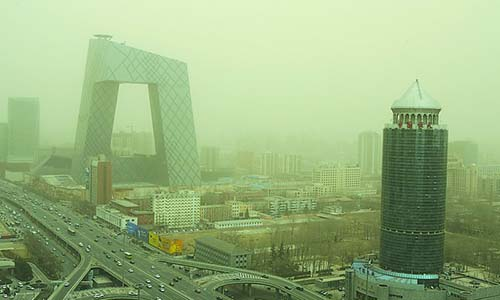

|
||||||||
|
||||||||
|
 1. 一氧化碳（CO） 2. 碳氢化合物（HC） 3.氮氧化物（NOx） 4. 光化学烟雾 5.微粒污染物（PM) 具体危害是： 近年城市机动车数量激增，大量的尾气排放是一氧化碳和二氧化氮持续偏高的主要原因，二氧化氮在强光照下光解引起臭氧浓度升高，这是形成光化学烟雾的基本原因；颗粒物的组成复杂，其中的细颗粒是人为活动的产物，如燃料未完全燃烧形成的炭粒等；汽车起步、怠速时排放的挥发性碳氢化合物同样是汽车尾气的主要污染物。 1.1 一氧化碳（CO） 一氧化碳即通常说的“煤气”，是无色、无味、无臭的有毒气体，化学性质较稳定，是大气中排放量最大的大气污染物。一氧化碳是由于含碳物质不完全燃烧产生的，城市大气环境中的一氧化碳主要来源于机动车排气和燃煤，CO能很快和血红素蛋白（Hb）结合形成碳氧血红素蛋白（CO-Hb），使血液的输氧能力大大降低，引起头晕、恶心、头痛等症状，严重时会使心血管工作困难，直至死亡。 1.2 碳氢化合物（HC） 碳氢化合物（也称烃类）包括未燃和未完全燃烧的燃油、润滑油及其裂解产物和部分氧化物，如苯、醛、烯烃和多环芳香族碳氢化合物等200多种复杂成分。应当引起注意的是带多环的多芳香烃，是强烈致癌物质，烃类成分还是引起光化学烟雾的重要物质。 1.3 氮氧化物（NOx） 氮氧化物是燃烧过程中形成的多种氮氧化物，如NO、NO2、N2O3、N2O5等，总称NOx，以汽油、柴油为燃料的汽车，尾气中氮氧化物的浓度相当高，氮氧化物最终会转化成硝酸和硝酸盐，随着降水和降尘从空气中去除，硝酸是酸雨的原因之一。在内燃机中主要是NO，约占95%，其次是NO2，占5%。NO是无色无味气体，只有轻度刺激性，毒性不大，高浓度时会造成中枢神经系统轻度障碍，NO可以被氧化成NO2。NO2是一种棕红色强烈刺激性的有毒气体，对心、肝、肾都会有影响。 1.4 光化学烟雾 环境空气中的臭氧、过乙酰硝酸酯（PAN）、醛类等混合形成的淡兰色烟雾，具有很强的氧化性和刺激性，不是由污染源直接排放的污染物，它们是石油燃料燃烧排放大量的氮氧化物和碳氢化合物等一次污染物在紫外光照射下，发生化学反应生成的二次污染物，是光化学烟雾污染的主要污染物，具有很强的氧化性和刺激性，它降低能见度，对人体的眼、喉、鼻，对动物、植物、各种材料都由很大的危害。下列方程式为臭氧（O3）形成的方式之一，其中hv代表紫外光，M代表自由基[2]。防止光化学烟雾主要是控制汽车尾气排放，安装尾气净化装置，此外控制工业过程中一次污染物也很重要。 NO2 + hv → NO + O (1)， O + O2 + M → O3 + M (2) 1.5 微粒污染物（PM） 微粒（也称颗粒）对人体的健康的危害程度和颗粒的大小及组成有关。微粒越小，悬浮在空气中的时间越长，它们进入人体肺部后停滞在肺部及支气管中的比例越大，危害越大。微粒除了对人体的呼吸系统有害外，由于微粒存在孔隙能粘附SO2、未燃HC、NO2等有毒物质或苯丙芘等致癌物质，因而对人体的健康造成更大的危害。由于柴油机的微粒直径大多小于0.3微米，而且数量比汽油机高出30－60倍，成分更复杂，因而柴油机的微粒排放相对更大。 |
|||||||